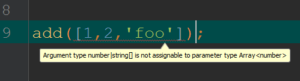
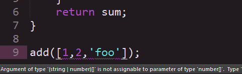

var x; // x starts undefined
typeof x === 'undefined'
x = 5; // now it's is a number
typeof x === 'number'
x = 'five'; // now it's a string
typeof x === 'string'
x = true; // now it's a boolean
typeof x === 'boolean'
x = {value: 'five'}; // now it's an object
typeof x === 'object'
With JavaScript...anything is possible
Change all the types...
We have types, but they're not static.
(No type is known or declared at compile time)

7 Types in JavaScript
-
Boolean
-
Number
-
String
-
Object
-
Symbol
-
Null
-
Undefined
Most code has type expectations
...we just don't always acknowledge it.
function add(arr) {
var sum = 0;
for (var i = 0; i < arr.length; i++) {
sum += arr[i];
}
return sum;
}
add([2,3]); // returns 5 as expected
add(['foo', 'bar']); // returns "0foobar" (expected?)
add(null); // Throws exception: cannot read prop 'length' of null
What to do?
Ad Hoc Runtime Checks
function add(arr) {
if (!Array.isArray(arr)) return;
var sum = 0;
for (var i = 0; i < arr.length; i++) {
if (typeof arr[i] !== 'number') return;
sum += arr[i];
}
return sum;
}
Ad Hoc Runtime Checks
function add(arr) {
if (!Array.isArray(arr)) throw('not an array');
var sum = 0;
for (var i = 0; i < arr.length; i++) {
if (typeof arr[i] !== 'number') throw('not a number');
sum += arr[i];
}
return sum;
}
Type Annotations
/**
* Add all numbers in an array
*
* @param {number[]}
* @return {number}
*/
function add(arr) {
var sum = 0;
for (var i = 0; i < arr.length; i++) {
sum += arr[i];
}
return sum;
}
Type Annotations
/**
* Add all numbers in an array
*
* @param {number[]}
* @return {number}
*/
function add(arr) {
var sum = 0;
for (var i = 0; i < arr.length; i++) {
sum += arr[i];
}
return sum;
}
Explicit typing...without any checks.
Code Reviews !== Type Checks
Type Checking in JavaScript
ActionScript
Early 2000s | Partially conformed to ECMAScript 4
private function add(arr:Array):int{
var sum:int = 0;
for (var i:int = 0; i < arr.length; i++) {
sum += arr[i];
}
return sum;
}
Closure Compiler
~2009
/**
* Add all numbers in an array
*
* @param {number[]}
* @return {number}
*/
function add(arr) {
var sum = 0;
for (var i = 0; i < arr.length; i++) {
sum += arr[i];
}
return sum;
}
TypeScript
2012 | Compiles to JavaScript, optional static typing
function add(arr:Array<number>):number{
var sum:number = 0;
for (var i:number = 0; i < arr.length; i++) {
sum += arr[i];
}
return sum;
}
Flow
2014 | Compiles to JavaScript, optional static typing
/* @flow */
function add(arr:Array<number>):number{
var sum:number = 0;
for (var i:number = 0; i < arr.length; i++) {
sum += arr[i];
}
return sum;
}
Flow Comments
2015 | Alternative to a transpile step
/* @flow */
function add(arr/*:Array<number>*/)/*:number*/{
var sum/*:number*/ = 0;
for (var i/*:number*/ = 0; i < arr.length; i++) {
sum += arr[i];
}
return sum;
}
| Released | Runtime Env. | No Transpile | Null Checking | ES6 | |
|---|---|---|---|---|---|
| Closure Compiler | 2009 | Java | ✓ | X | Some |
| TypeScript | 2012 | JavaScript | X | X | Some |
| Flow | 2014 | OCaml | X | ✓ | Some |
| Flow Comments | 2015 | OCaml | ✓ | ✓ | Some |
Adding Gradual Type Checks
Step 1: Choose a Type Checker
Step 2: Set Up a Transpile Step
Step 3: Add Type Annotations
Step 1: Choose a Type Checker
Step 2: Set Up a Transpile Step
Step 3: Add Type Annotations
TypeScript vs. Flow
TypeScript
- Released 2012
- Written in JS: any OS
- Community-provided declaration files
- Addtional transpiled features (defaults, overloads)
Flow
- Released 2014
- Written in OCaml: OSX, Linux
- Built-in
nullhandling. - Comment-only syntax available
Step 1: Choose a Type Checker
Step 2: Set Up a Transpile Step
Step 3: Add Type Annotations
Setting Up Flow
1. Install Flow from flowtype.org
2. Add transformer ( JSX or Babel ) to your build
Using Flow
1. Run flow check
2. Run build with transformer.
-
Check
→
-
Transform
Using Flow
Setting Up TypeScript
Install TypeScript with npm i -g typescript
Using TypeScript
Run tsc myFile.ts
Using TypeScript
Step 1: Choose a Type Checker
Step 2: Set Up a Transpile Step
Step 3: Add Type Annotations
Type Inference
Some of your work's already done!
var x = 1; x.length;
Flow: property length: Property not found in Number
TypeScript: Property 'length' does not exist on type 'number'
Adding Basic Types
Flow: number, string, boolean, void, Array, Function, Object, mixed, any
TypeScript: number, string, boolean, void, Array, Function, Object, any, enum
var x:string = 'test';
Arrays
var list:number[] = [1,2,3]; var anotherList:Array<number> = [1,2,3];
Union Types
ThisType | ThatType
var x: number | string = 0; x = 'foo';
Null Checks
Flow has the advantage here
var x = null; x.foo;
Flow: property x: Property cannot be accessed on possibly null value
TypeScript: no error
Functions
Both arguments and return values (the function itself)
function helloWorld(name: string):string {
return 'Hello, ' + name;
}
function addExclamation(sentence: string):string {
return sentence + '!';
}
addExclamation(helloWorld('EmpireJS'));
Object Literals
function doSomething(modelObject: {title: string}) {
return modelObject.title;
}
doSomething({title: 'My Object!', id: 2, flag: true});
Interfaces
interface Model {
title: string
}
function doSomething(modelObject: Model) {
return modelObject.title;
}
doSomething({title: 'My Object!', id: 2, flag: true});
External interfaces via declaration files
→ Find TypeScript declarations at definitelytyped.org
And there's more!
- Classes
- Modules
- Nullable Types
- Generics
- Polymorphism
But is it worth it?

Catch More Bugs at Compile Time
function helloWorld(name:string) {
return 'Hello, ' + name;
}
helloWorld('EmpireJS');
helloWorld(null);
Flow: null: This type is incompatible with string
Self-Document Code Behavior
function flatten (input, shallow, strict) {}
function flatten (
input: Array<any>,
shallow: boolean,
strict: boolean
): Array<any> {}
Easier to Reason About Code Flow
-
In: Number
Out: String
↗
-
In: String
Out: Object
↗
-
In: Object
Out: Boolean
Correctness
The ability of software products to perform their exact tasks, as defined by their specification.
- Bertrand Meyer
Tooling

IntelliJ
Sublime
And someday it might be in JavaScript...
The TypeScript team is [...] looking forward to working together going forward and creating the best tools we can for the JavaScript community. In the long term, we will also be working to fold the best features of these tools into ECMAScript, the standard behind JavaScript.
- TypeScript and the Road to 2.0
Thanks!